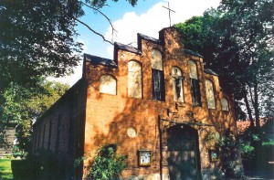
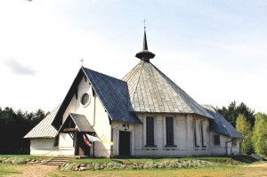
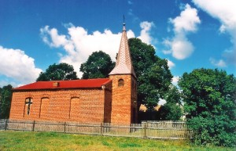
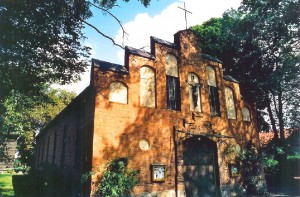
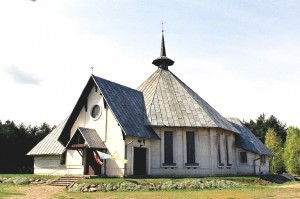
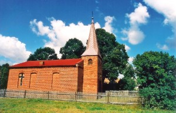

Kościoły
Kościół Najśw. Serca Pana Jezusa w Drawsku

Kościół filialny pw. Opatrzności Bożej w Drawskim Młynie

Kaplica pw. NMP Częstochowskiej w Chełście

Parafia Najświętszego Serca Pana Jezusa w Drawsku
Strona informacyjna



 Parafia Najświętszego Serca Pana Jezusa w Drawsku
Parafia Najświętszego Serca Pana Jezusa w Drawsku